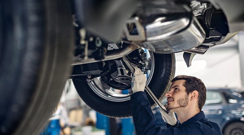

How To Know If Your Used Car Is Covered By The California Lemon Law
The idea of purchasing a used car is as old as the car itself. It can be a great way to get a reliable vehicle at a fraction of the cost of a new one. However, with the many options available, it can be difficult to know which car is the best for your needs. In some cases, a used car might turn out to be a lemon, requiring expensive repairs and leaving you worse off than when you started.
Fortunately for consumers, the Lemon Law helps protect them from these unfortunate circumstances.
In this blog post, explore the Lemon Law and its impact on used car purchases. We will look at what qualifies as a lemon, the protections afforded by the law, and how to pursue a case against a car dealership if needed.
The California Lemon Law is not simply for new cars. One of the strongest lemon laws in the country, this and running car laws apply to used, certified pre-owned and refurbished cars that were bought with active warranties from the manufacturer.
Does the California lemon law apply to used cars? In California, the answer is yes. The California Lemon Law protects used cars existing for personal use or that have been subject to a flaw that could not be fixed under warranty.
Understand Your Rights Under CA Used Car Law:
If you purchased or leased a car, you may be eligible for a car substitute, cash awards, or a refund if the following lemon law qualifications are met:
You purchased the (used) car from an authorized dealership, not from a private individual.
The car was purchased with a warranty that qualifies under the California Lemon Law.
The vehicle has a mechanical defect that compromises its use, safety, or value.
You gave a mechanic or dealership several chances to repair your car during the warranty period.
The California Lemon Law does not protect your secondhand car even if:
- Bought your used vehicle as it was.
- You purchased your automobile from a private individual or an auction.
- You got your used car after the extended warranty expired.
- Your used car issues may be caused by injuries or overlooked maintenance.
If a manufacturer is unable to repair your used car within a reasonable number of attempts, it has an affirmative obligation to buy back or replace your defective vehicle. Many California customers require a lemon law case against the automotive manufacturer to get a vehicle repurchase or replacement.
The California Lemon Law has a statute of limitations of four years on lawsuits resulting from automobile problems. Bark merry at the start during the period your lawsuit proceeds from claiming economic losses caused by a vehicle defect.
How frequently should a used-car specialist make repairs on a car?

The California Lemon Law suggests that any reasonably numerous repair attempts should be made on a car during the warranty period in order for it to be considered a lemon. For new and used vehicles, the guidelines are the same. While there is no set threshold that is reasonable for qualifying as a lemon, the California Lemon Law does provide a rough guideline.
By surprise when within 18 months or 18,000 miles, whichever is earlier: your used car might be deemed a lemon.
- A problem isn't fixed after four or even more repairs.
- In some cases, despite two or more repairs, obvious damage won't be addressed.
- The defect is not fixed within a total of 30 days.
However, evaluating whether this presumption applies only occurs if you went through arbitration and received a negative result. These benchmarks are an indication of a rough guideline, not a strict rule.
Many used vehicle lemon law claims for used cars do not follow the conditions set by California, and consequently, the buyer or lessor may still obtain a loan or gear replacement.
In conclusion, researching the Lemon Law is an important step to take before buying a used car to ensure that you are protected from any potential issues. Although it is a good idea to research a car's history and have it inspected by a professional before making the purchase, understanding the Lemon Law and knowing your rights is key to ensuring that you are not taken advantage of. Being aware of the law can save you a lot of time, money, and stress in the long run.